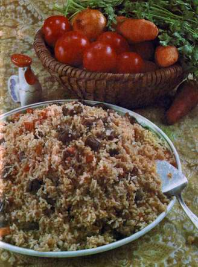
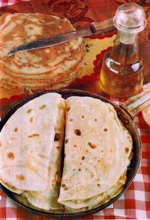

Cuisine
Main Courses:  Main dishes are usually based on meat, grains, and potatoes. Meat or chicken boiled in the broth is cut into small pieces and served as a main course, sometimes quickly fried in oil with onions, carrots, and bell peppers. Boiled potatoes are a favorite side dish, with grated horseradish served as an accompaniment. A chicken stuffed with eggs in milk is a special dish for holidays. Balesh is the oldest traditional dish combining meat and grains. Pieces of fat meat (mutton, beef, goose, or goose and duck innards) are combined with grains (millet, spelt, rice) and baked in a crock. Tutirma, an intestine filled with finely cut or chopped liver and millet or rice, is another combination of meat and grains. Pilaw (pilaf) is served at dinner parties, especially in the city. A popular local version is the so-called Kazan pilaw prepared with boiled meat. Dishes combining boiled meat with noodles include qullama or bishpichmak, common for many Turkic peoples. Meat is stored in the winter naturally frozen; it is preserved for the spring and the summer by salting or curing. Horse meat is used to make sausages ; cured goose and duck are considered a delicacy. Poultry eggs, primarily those of chickens, are a very popular dish in Tatar cuisine. They are eaten boiled, fried, and baked. Grains are made into a variety of porridges: millet, buckwheat, oatmeal, rice, peas, etc..
Beverages:
 Ayran is a dairy drink made by diluting quatik (sour milk) with cold water. Quas (kvass) is a beverage made from rye flour and malt that the Tatars have borrowed from the Russians. A kompot of dried apricots is a popular dessert at dinner parties.
Another non-alcoholic sweet beverage is sherbet made from honey. In the 19th and early 20th century it was a purely ceremonial drink, served to wedding guests as the "bride's sherbet" in the bridegroom's home.
Tea is a typical hospitality beverage among the Tatars. They drink hot, strong tea, usually with milk. Tea with baked sweets (qabartma, pancakes) sometimes replaces cooked breakfast.
Ayran is a dairy drink made by diluting quatik (sour milk) with cold water. Quas (kvass) is a beverage made from rye flour and malt that the Tatars have borrowed from the Russians. A kompot of dried apricots is a popular dessert at dinner parties.
Another non-alcoholic sweet beverage is sherbet made from honey. In the 19th and early 20th century it was a purely ceremonial drink, served to wedding guests as the "bride's sherbet" in the bridegroom's home.
Tea is a typical hospitality beverage among the Tatars. They drink hot, strong tea, usually with milk. Tea with baked sweets (qabartma, pancakes) sometimes replaces cooked breakfast.
Sweets:
 The Tatar cuisine offers a variety of baked sweets, usually served with tea: chelpek (deep-fried pancakes), qatlama (a baked roll with a variety of fillings - poppy seeds, sesame seeds, qort, nuts), qus tele ("bird's tongue", deep-fried squares or diamonds of unleavened dough), lawash (fried dumplings filled with raisins), pashtet (sweet pies filled with jam or dried fruits) etc. ChakChak (chakchak, chak-chak, or chek-chek) is a mound of honey-drenched sweet pastry balls, common among all Turkic peoples. It used to be a ceremonial food brought by the bride to the reception at the bridegroom's home. Today it is a common sweet. Honey is very popular in baking and on its own, served with tea.
The Tatar cuisine offers a variety of baked sweets, usually served with tea: chelpek (deep-fried pancakes), qatlama (a baked roll with a variety of fillings - poppy seeds, sesame seeds, qort, nuts), qus tele ("bird's tongue", deep-fried squares or diamonds of unleavened dough), lawash (fried dumplings filled with raisins), pashtet (sweet pies filled with jam or dried fruits) etc. ChakChak (chakchak, chak-chak, or chek-chek) is a mound of honey-drenched sweet pastry balls, common among all Turkic peoples. It used to be a ceremonial food brought by the bride to the reception at the bridegroom's home. Today it is a common sweet. Honey is very popular in baking and on its own, served with tea.
Baked Foods:  A wide variety of dough dishes is a feature of the traditional Tatar cuisine. Unleavened dough is traditionally used for buns, both sweet and savory, flatbreads, and biscuits. Leavened yeast dough is used to make bread (ikmak, ipi), which is always served with meals. Bread was traditionally baked from rye flour, and only the wealthy could afford wheat bread. Today, both wheat and rye bread are found in stores.
Qabartma is a kind of yeast dough pancake that may be prepared in different ways: baked in a pan in front of an open oven fire, or fried in boiling oil in a cauldron. Qabartma is eaten hot, thickly spread with butter. Liquid batter is also prepared with and without yeast. Pancakes (qoymaq) are made from unleavened batter using wheat flour. Bliny-style pancakes are made from yeast batter using different types of flour (oats, peas, buckwheat, millet, wheat, or mixed). Yeast-batter qoymaq is thicker than the Russian bliny. It is usually served for breakfast, accompanied by melted butter in a small dish.
Various baked items with a savory filling are specific for the Tatar cuisine. The oldest and simplest is kystyby, also called kazinak. This is an unleavened pancake folded into two and filled with cooked millet. Since the end of the 19th century, kistyby has been made with mashed potatoes. Balesh made from unleavened or fermented dough is filled with pieces of fatty meat (mutton, beef, goose, duck, etc.) mixed with grains or potatoes. Balesh used to be made for special occasions in the shape of a low truncated cone with an opening on top. Subsequently the name began to be used for ordinary pies with different fillings, similar to the Russian pirog. Another traditional Tatar pie is ochpochmaque, a triangular shell originally filled with a mixture of fatty meat and onions. Later pieces of potato began to be added to the filling. Peremech is a round-shaped minced meat pie, fried and served hot sprinkled with melted butter. Except for the round shape, it is similar to the cheburek of the Crimean Tatars. Bakkan, particularly widespread in rural areas, is an individual oval or crescent-shaped pie (like large pirozhki), filled with various vegetables (mainly pumpkin, also carrots or cabbage). Sumsa is a similar pie, usually with a meat and rice filling. A special festive dish among urban Kazan Tatars is ggubadya, a tall round pie with a multilayer filling, which includes rice, dried fruits, and qort (a kind of dried salty cheese).